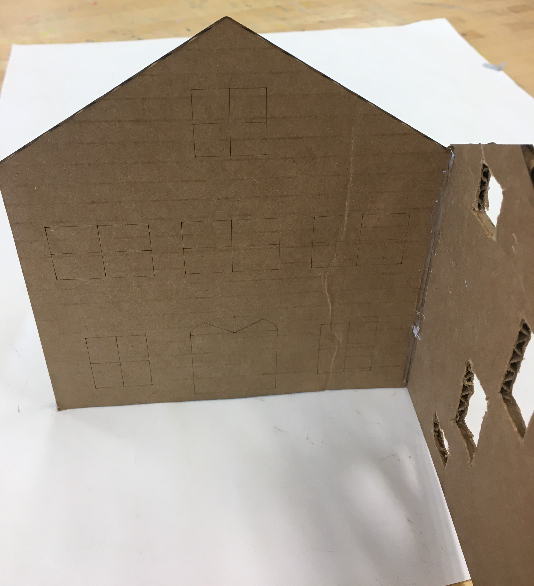

Clea Joy Ramos - E&D I - April - May 2021
The Candy Land project was a group effort in which I worked with my classmates to create an interactive gingerbread display by combining electronic components with a physical structures and models. Each member of my group was assigned a certain role and had specific responsibilities so that we could each complete different components of our project. My role was the Designer ; I was responsible for the layout of our design and for creating the illustrator files for the cardboard prototypes and the gingerbread components. Even though we were assigned our own roles and responsibilities, we often helped each other and took on new roles. For instance, I also worked on coding and assembling electrical components in addition to my responsibility of the cardboard and gingerbread prototypes.
My other group members included:When first starting this project, we brainstormed ideas and themes for our gingerbread display. We decided on a train theme and our display would be centered around a train that would move back and forth. I also brainstormed other interactive aspects such as a moving crane and a Railroad crossing sign. We first settled on the railroad crossing sign, and as we started to develop more ideas, we added more components to our display. Ultimately, we included 3 electronic components: a moving train cart, a railroad crossing sign, and a row of houses with lights.
 |
|
| Initial layout of display | Additional ideas for display |
|---|
 |
||
| Sketch of Prototype with measurements | Creating Cardboard Prototype with guidelines | V1 Cardboard Prototype with raster elements |
|---|
After the cardboard prototype was cut, we began assembling the pieces of the row house. After seeing how the cut out windows looked, I had the idea to cut out multiple windows and insert LEDS behind them so that the windows would light up. So, after confirming the new idea with my teammates, JP cut out some more windows from the front cardboard panel. Then, we attached the front panel of the to the sides. Next, we placed and our partially row houses prototype on our cardboard platform. We then sketched and labeled the rest of the components relative to the row houses.
 |
 |  |
| Cardboard front panel of Row Houses | Cardboard side panel of Row Houses | Assembled Cardboard Row Houses on labledcardboard platform |
|---|
For the next iteration and final Illustrator file, I cut out more windows on both the front and side pannels(shown in red). I also etched and cut small gingerbread people and trees for decoration. Once the gingerbread pieces were cut out, JP glued pieces of opaque plastic behind the windows to create window panes.
 |
||
| Final illustrator file to cut on Gingerbread | Cut Gingerbread pieces | Row Houses pieces with opaque plastic windows |
|---|
After seeing the gingerbread houses with windows, I thought it would be cool to add lights behind the windows. Since I had completed my role of designer by finishing the cardboard prototype and gingerbread cut out, I decided to take on this new responsibility of making the row houses light up.
| Design/Circuit Layout | Code | pic/video |
|---|